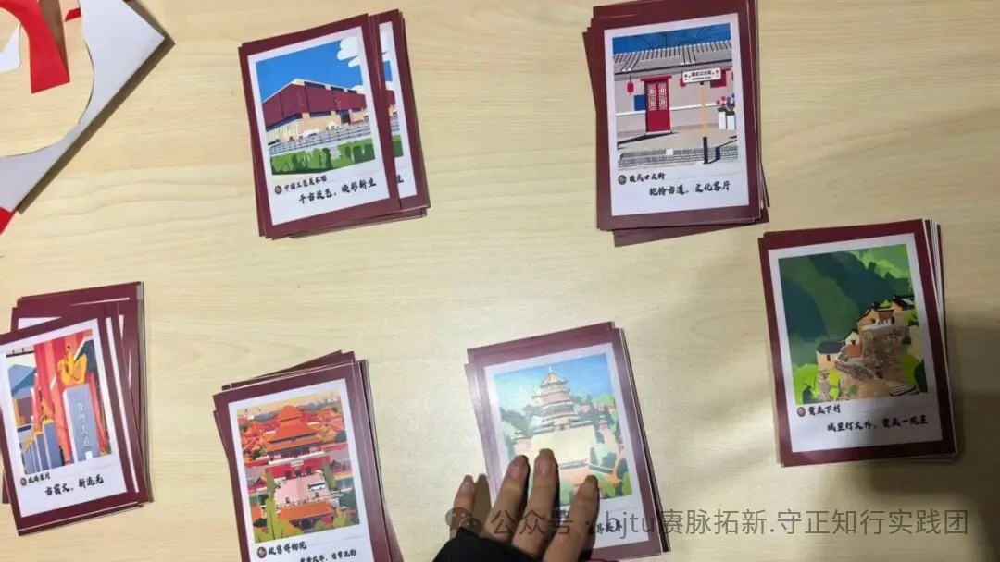
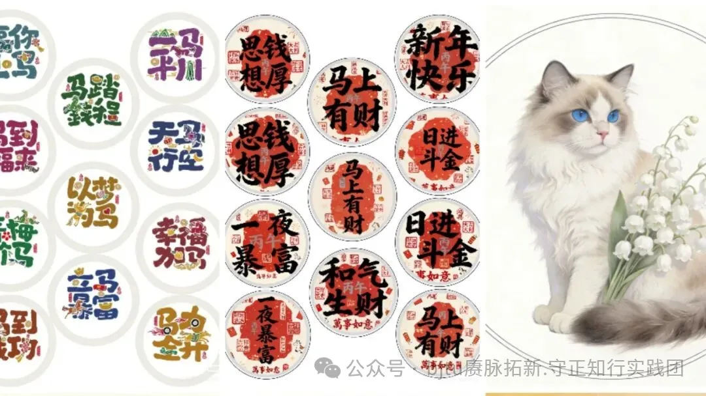
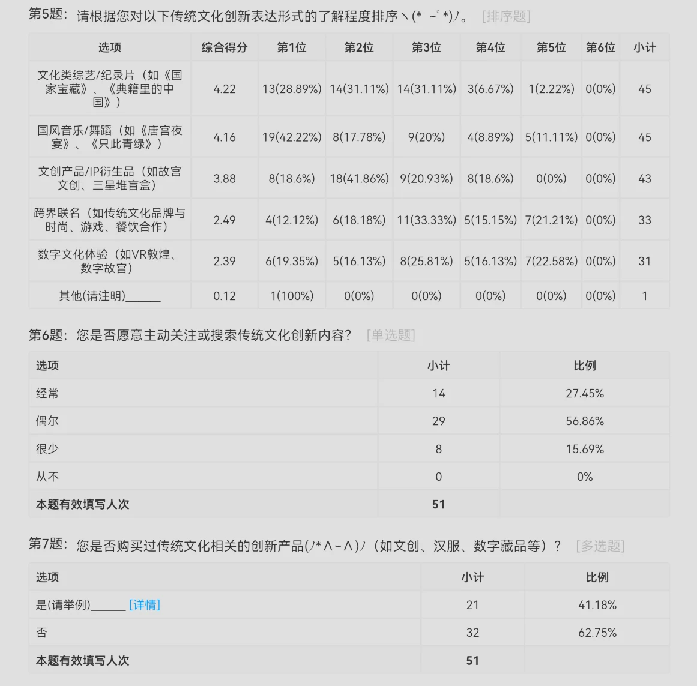
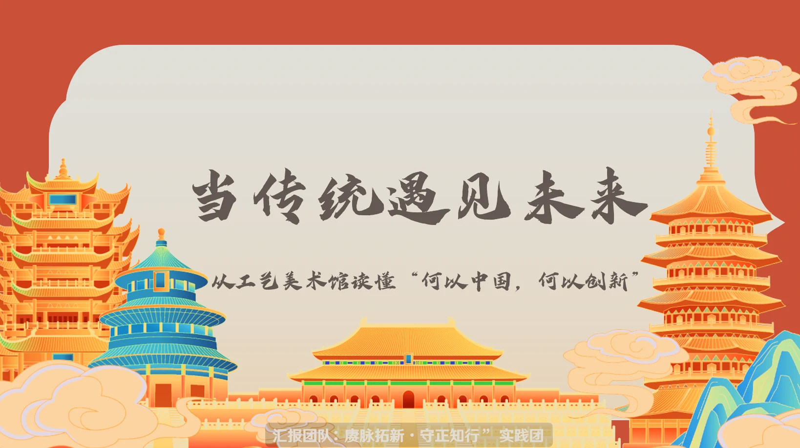
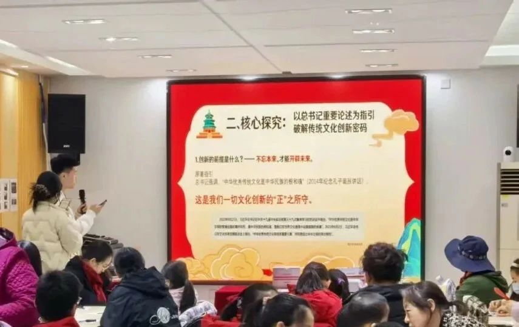

正在加载二维码...
扫描二维码关注我们的微信视频号，获取更多精彩内容

传统文化创新表达与传播调研成果展
通过理论宣讲与社会实践调研相结合，强化理论学习，深化实践运用，坚实做好党的创新理论的传播者、实践者。
探寻传统文化与现代创意、科技及传播媒介的融合之道，挖掘其背后连接历史与当下、沟通中国与世界的精神密码与实践智慧。
赓续文脉，迈步拓新；守正固本，知行合一。
一群热爱传统文化、勇于创新实践的青年学子，因共同的理想汇聚在一起，在探索中成长，在实践中进步。

强化同学们对理论知识的理解，希望大家坦诚交流、互助学习，让调研成果辐射更广泛人群。

在总书记思想引领下，领会传统文化创新传播方式，愿实践团满载而归、硕果飘香！

感受传统文化经创新发展后的精神力量，在亲身实践中体会优秀传统文化的魅力。

深入学习习总书记重要思想，了解文化创新传播意义，发挥青年当代价值！

负责文字撰写与线下调研组织，和大家共同协作，产出高价值社会实践成果。

和优秀同学们一起参与实践活动，超开心～ 关注我们谢谢～

感受习主席思想赋能下传统文化的魅力，探索当代创新性表达，在实践中成长进步！

用镜头和文字记录传统文化"潮"表达，让老祖宗的智慧在新时代发光发热！
我们以脚步丈量大地，用眼睛发现案例，用头脑思索路径，通过问卷调研、实地走访、线上分析，系统收集创意文创、国潮品牌、数字文博等典型案例；走入故宫、中国工艺美术馆，深入观察、访谈、分析，探寻传统文化创新融合之道；结合调研成果开展校园宣讲，阐释文化创新背后的时代内涵，让传统文化的新魅力突破校园，触达更广泛的社会群体。
以脚步丈量大地，深入故宫博物院与中国工艺美术馆，观察传统文化在当代的创新表达。
通过线上问卷，收集大众对传统文化创新的认知与期待，为研究提供数据支撑。
与专业人士交流，探讨传统文化与现代创意、科技及传播媒介的融合之道。
系统收集创意文创、国潮品牌、数字文博等典型案例，分析其成功经验与创新路径。
结合调研成果开展社区宣讲，阐释文化创新背后的时代内涵，传播传统文化新魅力。
通过新媒体矩阵，让传统文化的新魅力突破校园，触达更广泛的社会群体。
深入故宫博物院与中国工艺美术馆，探索传统文化在当代的创新表达与传播，解锁文化"活起来"的密码。
600 年红墙黄瓦，如何从昔日紫禁城变成今日"顶流"文化殿堂？我们用脚步、对话和数据，挖出了故宫"返老还童"的秘密，更读懂了它作为"两个结合"微观样本的深层内涵。


故宫"破圈"三连招：让文物说话（展示阐释层，解决 "看不懂"）→ 文创融生活（产品转化层，让皇家宝物 "飞入寻常百姓家"）→ 体验做主角（体验参与层，从 "围观" 变 "主演"）。
深层创新密码：一是用辩证思维解决 "保护与开放" 的矛盾（数字故宫、科学分流）；二是实现传统文化与现代精神的 "双向奔赴"（马克思主义群众观注入 + 现代科技赋能，让紫禁城成为人民的博物馆）。


文化创新不能"走形式不走心"，要坚守"社会效益首位"，创新必须建立在扎实的"守正"基础上，做到"守正不泥古、创新不离宗"


一组矛盾数据：65% 的同龄人从未到访中国工艺美术馆，却有 80% 的人对数字敦煌、故宫文创等传统文化创新形式满怀兴趣。～
传统文化如何从 "陌生的宝藏"，变成我们 "愿意奔赴的风景"？我们在工艺美术馆找到了答案。


创新的前提： 不忘本来，守正固本 总书记论述："中华优秀传统文化是中华民族的根和魂。" 调研发现："尊重和传承文化本体" 成为问卷中传统文化创新的首要前提，从玉雕青瓷、上古神话中，我们读懂了完整的 "中国基因图谱"。
创新的方法： 创转发展，旧邦新命 总书记论述：推动中华优秀传统文化 "创造性转化、创新性发展"。 调研发现：不锈钢雕塑、非遗文创是 "转化"—— 用现代材料承继传统技艺；木雕航天员、冰墩墩是 "发展"—— 用古老技艺刻录新时代精神。
创新的归宿： 服务人民，文化共享 总书记论述："把人民作为文艺审美的鉴赏家和评判者。" 调研发现：三代人共赏光影民族话剧、孩子抚触荥经砂器，文化走出殿堂，走进日常生活，在人民的土壤中生根长青。


让传统 "活起来"，更要让传统 "新起来"，这是工艺美术馆给出的传统文化创新答案。
.webp)


承接实践团此前对故宫、中国工艺美术馆的"点状"调研，引出本次"线状"探索的核心逻辑 —— 文化遗产并非孤立存在，而是蕴含于宏大文明脉络之中。点明西山永定河文化带作为跨区域、多业态的文化生态系统，其"协同创新"是本次调研的核心命题，同时交代调研的初衷与范围（覆盖皇家园林、千年古村、工业遗址等多元节点）。

解读《北京市西山永定河文化带保护发展规划》的顶层设计，阐释马克思主义系统观念在文化保护中的实践应用。说明文化带建设如何打破区域壁垒，将颐和园的审美体系、琉璃渠的物料供应、模式口的商贸脉络还原为古都运行的有机整体，从"碎片化保护"转向"一盘棋谋划"，为文化遗产的创造性转化、创新性发展奠定基础。
聚焦四大代表性节点，展示不同文化禀赋下的创新实践：
爨底下村：以 "活态社区" 为核心，村民通过民宿运营、博物馆共建，实现 "共建共治共享" 的古村保护；
琉璃渠村：以 "生产性保护" 为路径，通过数字技术与现代工业融合，打造 "博物馆 + 工坊 + 文创" 的琉璃技艺传承模式；
颐和园：以 "美育课堂" 为载体，将建筑礼制转化为亲子手工、沉浸式修复体验，实现古典美学的青年化表达；
模式口大街：以 "社区共生" 为目标，修缮后融入书店、咖啡馆等新业态，保留原住居民市井烟火，践行 "生活态保护"。


客观指出文化带当前面临的困境 —— 跨区协调机制欠缺、文创产品同质化、文化表达略显割裂。基于调研发现，提出三项青年提案：
推动 "场景革命"：文创开发从 "泛化商品" 转向 "特定场景解决方案"，让游客 "所见即所购，所感即所藏"；
实现 "有机融合"：避免现代元素对传统叙事的视觉干扰，让技术手段成为阐释文化价值的论据；
建立 "审核机制"：构建基于文化深度的评估体系，确保新业态深化核心文化阐释而非背离。
总结调研的思维升维 —— 从故宫的"点式调研"到文化带的"线型探索"，青年不仅是文明的旁观者，更应成为协同叙事的主动书写者。阐述实践团未来计划：探索"科技 + 文化"深度融合，用数字化语言转译历史，以创新设计激活遗产当代价值，争做文明交融的"转译桥梁"，让沉睡的文化符号转化为鲜活的时代记忆。
为深入学习贯彻习近平新时代中国特色社会主义思想，落实“把论文写在祖国大地上”的实践要求，在实践调研中强化理论学习，深化实践运用。北京交通大学赓脉拓新.守正知行传习实践团前往北京市海淀区进口社区，开展了以“传统文化创新在当今社会的表达”为主题的宣讲。本团队用创新形式讲好中国故事，与居民的面对面交流中推动创造性转化，让青春在文化传承与基层服务中绽放绚丽之花。
社区宣讲不是单向的知识灌输，而是双向的情感共鸣，只有真正了解居民的需求，才能让传统文化有温度、可触摸。在实践筹备阶段，团队认真研读新思想。
实践团先后前往故宫、中国工艺美术馆、永定河开展线下实地调研，沉浸式感受中华优秀传统文化的深厚底蕴与时代魅力，收集大量实景素材、文物故事、非遗技艺与生态文化资料，为后续宣讲打下坚实基础。
内容设计上，实践团充分发挥专业优势，推动传统文化创造性转化、创新性发展。实践团将实地拍摄的照片、收集的历史故事、非遗技艺、生态文化等鲜活素材融入宣讲，同时制作网站、自制明信片等宣传材料，此外，实践团针对宣讲流程、互动引导开展多次讨论，力求以真诚专业的状态和创新的形式，让居民感受传统文化之美与青年创新之力。






实践活动当天，社区活动中心座无虚席。实践团以饱满热情开启传统文化创新宣讲。宣讲内容按照故宫、中国工艺美术馆、永定河的顺序依次展开，层层递进、内容丰富。
宣讲的第一站我们来到了故宫，实践团结合实地调研经历，从故宫庄严宏伟的建筑美学、底蕴深厚的宫廷历史讲起，讲述故宫“逆生长“的三条路径以及与理论结合的创新形式，结合具体案例，解读古建筑与文物里蕴藏的中华文脉，让居民足不出户便领略到故宫的传统之美与创新活力。
接着，宣讲聚焦中国工艺美术馆，以“何以中国，何以创新”为核心展开分享，紧扣总书记关于中华优秀传统文化“创造性转化、创新性发展”的重要论述，解读非遗工艺的历史渊源与匠心技艺，更分享了传统工艺在坚守文化根脉基础上，融合现代审美、创新制作技法的实践探索，让大家真切感受非遗文化的独特魅力与新时代的创新活力，理解传统文化创新“不忘本来、开辟未来”的深层内涵。
最后宣讲以永定河为主题，从西山永定河文化带“融古贯今、生生不息”的内涵出发，梳理其历史变迁与人文底蕴，解读文化带以系统观念重塑文化生态、各节点走差异化创新发展路径的实践智慧，同时分享调研中对文化带协同发展的思考，生动传递出生态保护与文化传承深度融合、文化发展与民生需求同频共振的新时代发展理念。
集中宣讲结束后，实践团带领社区居民开展传统文化创新体验活动。在成员的指导下，居民们动手体验非遗剪纸，创作属于自己的剪纸作品；共同制作创意文化徽章，将传统纹样与现代设计相结合；实践团还为大家发放精心制作的文化主题明信片，兼具纪念意义与文化价值。老中青少各年龄段居民踊跃参与，现场气氛温馨热烈、其乐融融。




从故宫、工艺美术馆到永定河的实地调研，再到走进社区宣讲、带领居民体验传统文化，我们真正懂得，传统文化要活在当下、融入生活，才能真正传承。大家深刻体会到，新时代青年既要守住文化根脉，更要学会用创新语言、创新形式让传统“潮”起来、“活”起来，以青年之力推动文化惠民。
宣讲结束后，社区负责人表示：“同学们把实地调研所学转化为文化服务能力，真正实现了以文化人、实践育人。既丰富了社区文化生活，也为文化传承注入青春动能，这样的宣讲接地气、聚人气、有灵气。”
“青年强，则国家强。”，此次的理论学习与运用不能止步于此，实践团将继续运用理论知识，让文化自信在触摸、思考与创造中在每一个人的心中建立起来。以青春之我、创造之我，推动中华优秀传统文化创造性转化、创新性发展，为建设文化强国、实现民族复兴贡献青春力量！

此次双馆调研，让我们对传统文化的 "根脉" 有了更具体的感知，也让我们明白，青年学子要从文化的 "观察者"，转向 "阐释者" 与 "创造者"。
持续深化对习近平新时代中国特色社会主义思想的学习，主动寻找其与专业学习、社会观察的结合点，让理论与实践相融。
发挥青年熟悉现代语境的优势，用年轻人的语言和喜欢的方式，把传统文化的亮点 "翻译" 给更多人，让传统与现代相拥。
保持清醒的批判性思维，理性看待文化热潮中的成就与问题，通过规范调查研究，为校园、社区文化活动提出建设性 "金点子"，让创新与守正相伴。
调研结束，但思考和实践才刚刚开始。我们将以 "赓脉拓新・守正知行" 为指引，持续探索传统文化创新之路，为传统文化在当代的生生不息，贡献一份青春微光！
文化自信不是喊出来的，而是在一次次触摸、思考和创造中建立起来的！